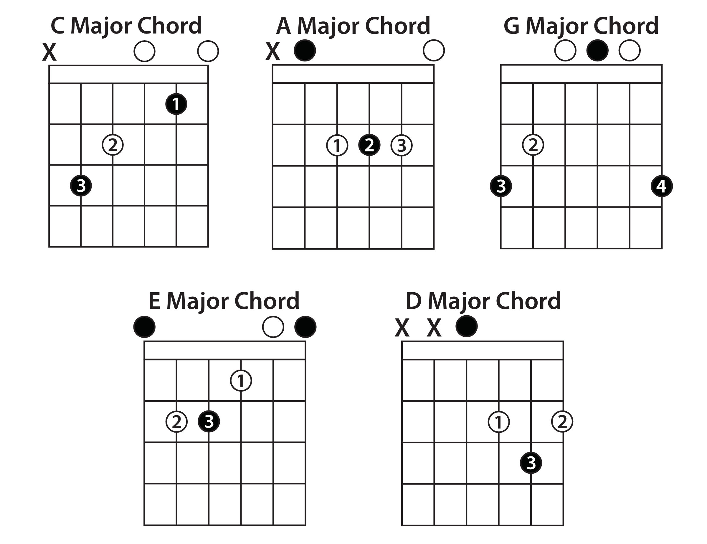

CAGED 系统¶
CAGED 系统和吉他的纯四度调弦息息相关。
以封闭 C 大三和弦指法为例，此时形成的六弦之间的音程关系为:
6 5 4 3 2 1
| 纯五 | 大三 | 小三 | 小三 | 小三 |
E C E G C E
3rd root 3rd 5th root 3rd
由于音程关系是相对的，因此这个指法可以表述为： 在吉他标准调弦上，以 5,2 弦为根音的大三和弦的按法。通过调整把位， 让某个自然音阶落在 5 弦上，就能得到该自然音阶对应的大三和弦。
私以为 CAGED 系统的意义在于通过确定的几个 pattern 能够快速得到标准调弦上指板音阶的分布。
评论
如果你有任何意见，请在此评论。 如果你留下了电子邮箱，我可能会通过 回复你。